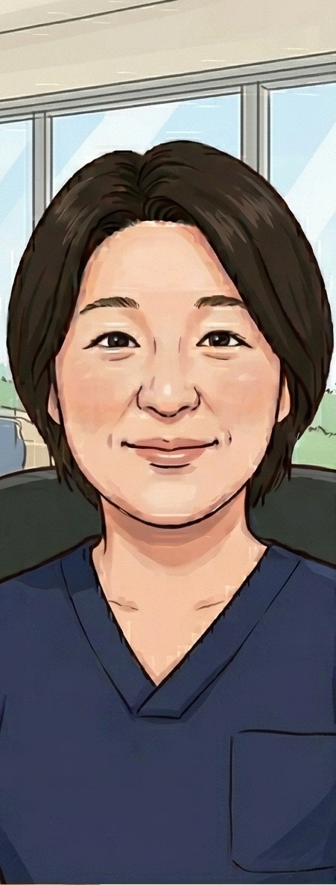

医師・スタッフ紹介
各領域の専門性を持つスタッフがチームで診療にあたります
科長・教授
シモダイラ ヒデキ
下平 秀樹
科長・教授
シモダイラ ヒデキ
下平 秀樹
資格・専門
- 医学博士
- 日本内科学会 認定内科医、総合内科専門医、内科指導医
- 日本臨床腫瘍学会 がん薬物療法専門医、指導医
- 日本がん治療認定医機構 がん治療認定医
- 日本人類遺伝学会・日本遺伝カウンセリング学会 臨床遺伝専門医、指導医
- 日本遺伝性腫瘍学会 遺伝性腫瘍専門医、指導医
- 日本肉腫学会 専門医、指導医
- 東北大学非常勤講師
助教
クドウ チエコ
工藤 千枝子
助教
クドウ チエコ
工藤 千枝子
資格・専門
- 医学博士
- 日本内科学会 認定内科医、総合内科専門医
- 日本臨床腫瘍学会 がん薬物療法専門医、指導医
助教
カワムラ ヨシフミ
川村 佳史
助教
カワムラ ヨシフミ
川村 佳史
資格・専門
- 医学博士
- 日本内科学会 認定内科医
- 日本臨床腫瘍学会 がん薬物療法専門医
- 日本緩和医療学会 緩和ケア研修会 修了
- 日本緩和医療学会 緩和ケア指導者研修会 修了

診療看護師（NP）
クロサワ エミコ
黒澤 恵美子
診療看護師（NP）
クロサワ エミコ
黒澤 恵美子
資格・専門
- 一般社団法人日本NP教育大学院協議会 NP資格認定試験合格
- 厚生労働省 看護師特定行為研修（38行為21区分）修了
- 厚生労働省 看護師特定行為研修指導者講習会 修了
当科では、共に働く医師・スタッフを募集しています。
採用情報を見る